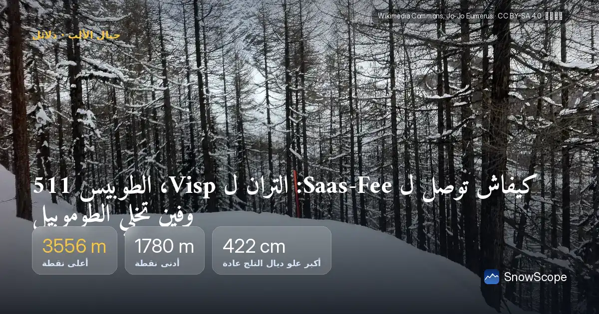

كيفاش توصل ل Saas-Fee: التران ل Visp، الطوبيس 511 وفين تخلي الطوموبيل
Saas Fee محطة بلا طوموبيلات ف 1,780 م محاطة ب 13 جبال فوق 4,000 م، محدودة ب 4 ممرات ديال الجبال اللي كاتحدد كيفاش تدير ليها. سواء جيت بالتران والباص ولا بطوموبيلك، الجزء الآخر ديال الطريق تمشي فيه ع الجوج ديال رجليك ولا بالشاطل ديال القرية بلا حتا فابور حتى تصل لأرضية الوادي.
شوف توقعات التلج مباشرة ديال Saas Fee فالتطبيق ديال SnowScopeالعلو ديال التلج، التنبيهات والخريطة 3D، فابور.
التران والباص: الطريق الأسرع من أغلب المطارات
من مطارات زيوريخ وجنيف وبازل وميلانو، الترانات كاتنزل لـ Visp ف وادي الرون. هذا الطريق كاتاخد حوالي ساعتين ونص من زيوريخ. ف محطة Visp، خط PostBus 511 كاتخرج كل 30 دقيقة وكاتدير نحو الجنوب ف وادي Saas وطالع لـ Saas Fee. الطريق الكامل من مطار كبير كاتاخد حوالي 3 ساعات.
السكة الحديد السويسرية الفيدرالية كاتبيع جناحات Supersaver برخص إذا حجزتي قدام. واخا توصلي لـ محطة الباص ديال Saas Fee، القرية راهي صغيرة بزاف حتى تقدري تمشي فيها سير، والبصات ديال التزحلق طالعة للتلفريك كاتكون فابور ل كل الركاب.
الدير بالطوموبيل: 4 ممرات، طريق وادي واحد
إذا دريتي بالطوموبيل، 4 طرقان كاتدير لـ Visp بعدا نحو الجنوب لـ Saas Fee. من الشمال عبر بيرن، تران سيارات Lötschberg كاتجيب المركبات عبر الجبل، والترانات كاتخرج لحد 6 مرات ف كل ساعة ف الاتجاهات. من الشرق، ممر Furka كاتعطيك طريق مفتوح. من الجنوب والإيطاليا، ممر Simplon كاتوصل لوادي الرون. من الغرب، طريق الوادي كاتدير حيت وادي الرون عبر لوزان وطالع نحو Visp.
نحو الجنوب ديال Visp، اتبع الألواح لـ Saas-Almagell. ف دوار Killerhof قرب Stalden، شد الخروج الثاني نحو Saas Fee. ف Saas-Grund، دور لليمين بعد الكنيسة وطالع لـ وادي Saas. الطريق كاتضيق وهي كاتلف طالعة.

خلي الطوموبيل ف المدخل، بعدا تنقل فابور جوه
لا حتا طوموبيل شخصية كاتدخل لـ Saas Fee روحها. بارتجات كبيرة ديال الطوموبيلات كاتقف ف مدخل القرية. مكتب السياحة كاتبالاش معلومات مفصلة ديال الوقوف والتحديثات على أي إيقافات مؤقتة ماعة الثلج ولا الأشغال. قنوات الأخبار المحلية كاتبالاش نبرات على الوصول.
واخا تخليتي الطوموبيل، ركب البصات المحلية بلا فابور والشاطلات ديال التزحلق. هاد الحاجات كاتقف ف محطة التلفريك Alpin Express والمحطة والبارتج ديال الطوابق والبارتج الشمالي. وخلال الموسم ما قبل الموسم (31 أكتوبر لـ 18 دجنبر 2026)، وكذلك من 19 دجنبر 2026 لـ 18 أبريل 2027، الباصات الكهربائية كاتوصل القرى القريبة بحال Saas-Grund وSaas-Almagell مباشرة لـ Saas Fee. البصات الأخرى ديال الوادي كاتاخد فابور إلا إذا كانك عندك SaastalCard.
شنو كاتقول الأرقام: شتا طويل وعميق
على 46 شتوات اللي فاتو، Saas Fee ف الارتفاع الوسطاني (2,668 م) كاتبالاش معدل ذروة الموسم ديال 178 سم، والثلج ف الأرض لحوالي 260 نهار كل شتا. أعمق الثلج عادة كاتقع ف مارس. ف الأساس (1,780 م) الأرقام أقل: ذروة عادية ديال 92 سم و 228 نهار ثلج، والثلج الأكتر غالبا كاتكون ف فبراير.
الارتفاعات الأعلى، حوالي 3,556 م، كاتحكي حديث آخر. هنا العمق الأوسط ديال الذروة كاتوصل لـ 422 سم، والثلج غالبا كاتجي ف نهاية شتنبر وكاتبقى لـ أوائل يوليو. هذا الميزة ديال الارتفاع هي لاش المحطة كاتخلي الثلج أطول نحو الربيع والصيف الأول.
تأخيرات الطقس: برّاني وقتك للطريق بزاف
ممرات Lötschberg وFurka وSimplon كاتقدرو يقفلو ف الثلج الثقيل ولا خطر الانهيارات. إذا كنتي دايرة بالطوموبيل، خلي وقت للتأخيرات ولا تنساش تتفقدي حالة الطرقان قبل ما تخرجي وتاني قبل ما ترجعي نحو التحت. نفس الحاجة بـ PostBus 511: العواصف الشتوية كاتقدرو تثقل الطريق، حتى خليك إضافي من الوقت وخزن البنزين كامل ولا الشحنة.
قوانين الإطارات الشتوية كاتسري على كل 4 الممرات والطرقان اللي تدير إليهم. تفقد تقييم الإطارات وسمك الرسم قبل ما تخرجي، خاصة إذا كنتي تاجرة طوموبيل. الوادي والقرية راهم عادة كاتكونو قابلين للوصول، بس إزالة الثلج حاجة ديما ف هذا الارتفاع.
أحسن وقت للدير وشنو تحضري
نونبر موسم أول؛ الثلج ف الأساس راه يبني بعد (الشتوات اللي فاتو كاتبين أن معدل 13 سم ب نص نونبر). الجهة الوسطانية والجهة الفوقانية كاتخزن أكتر، بس الحالة كاتقدرو تكون ضعيفة وغير مستقرة. ب دجنبر الأساس عادة عندو 35 سم، والجهة الفوقانية 150 سم، وهاد الحاجة كاتخلي المحطة أكتر موثوقة. من يناير لـ مارس كاتعطي الثلج الأعمق والأكتر استقرار.
سواء جيتي بالتران ولا بالطوموبيل، جيبي طبقات دافيا، حماية من الشمس وزجاجة ماء. إذا كنتي دايرة بالطوموبيل، عبّي المواد للنهار: بنزين وماء وأكلات خفيفة. الطريق ما طويلة، بس الطقس ديال الجبل كاتبدل بسرعة وقد تكوني متأخرة.
نصايح للي كيتزلجو
- دايرة التران؟ اشري التيكيت ديالك لـ Saas Fee ف موقع SBB وركب PostBus 511 مباشرة ف محطة Visp بلا ما تبدلي البلاصة.
- دايرة تران سيارات Lötschberg ف الشتا؟ تفقد أوقات الانتظار واحجزي مكان قدام ف موقع BLS حتى تجنبي التأخيرات.
- خلي الطوموبيل ف بارتجات المدخل طول المدة ديال الإقامة. البصات بلا فابور جوه القرية وطالعة لـ التلفريك كاتخليك ما تحتاجي تروح مرة ثانية لـ البلاصة وكاتوفري فليس الوقوف.
- الإطارات الشتوية إجبارية على كل 4 الممرات الجبلية من نونبر لـ أبريل. إذا كنتي تاجرة، تأكدي من الطوموبيل عندو إطارات شتا بتصنيف 3PMSF على الأربع كواليس ولا جيبي سلاسل وجراب ثلج.
- الطريق بره البيست والجولات ديال الجليد: تشاوري نشرة الانهيارات ديال SLF الأخيرة ف slf.ch وتمام حتا توظفي موجاج جبال مختار.
على هاد الأرقام
العلو ديال التلج فالمحطات هو أكثر تلج فالجهة الفوقانية فالتاريخ المكتوب؛ هادو تقديرات لمنطقة، ماشي قياس فنقطة وحدة. التوقعات يمكن تتبدل. ديما شوف النشرة الرسمية ديال الانهيارات قبل ما تخرج من البيست.
النشرات الرسمية ديال الانهيارات: WSL-SLF
كيفاش تستاشهد بهاد المقال
للبحث، التعليم ولا الصحافة: الأرقام والرسومات تقدر تعاود تخدم بيهم بحرية تحت CC BY 4.0 مع هاد الاستشهاد.
SnowScope (2026), كيفاش توصل ل Saas-Fee: التران ل Visp، الطوبيس 511 وفين تخلي الطوموبيل, https://snowscope.app/blog/ar/2026/11/how-to-get-to-saas-fee-train-postbus-car-free.html, تشاف ف 2026-11-09
SnowScope (Atlas Labs). (2026, November 9). كيفاش توصل ل Saas-Fee: التران ل Visp، الطوبيس 511 وفين تخلي الطوموبيل. SnowScope snow reports. https://snowscope.app/blog/ar/2026/11/how-to-get-to-saas-fee-train-postbus-car-free.html
BibTeX
@misc{snowscope2026howtogettosaasfeetrainpo,
author = {{SnowScope (Atlas Labs)}},
title = {كيفاش توصل ل Saas-Fee: التران ل Visp، الطوبيس 511 وفين تخلي الطوموبيل},
year = {2026},
month = nov,
howpublished = {\url{https://snowscope.app/blog/ar/2026/11/how-to-get-to-saas-fee-train-postbus-car-free.html}},
note = {Published 2026-11-09 14:31 UTC; accessed 2026-11-09}
}· CC BY 4.0 · الطريقة، الداتا والأدوات →
Saas Fee: التلج والحرارة حسب العلو، هاد الشتا مقارنة مع اللي فاتت (الأدوات) →
تابع Saas Fee
فابور: ميساج ملي يجي التلج، والتوقعات كل صباح.
تقارير أخرى ديال التلج

Cortina d'Ampezzo بتلاتة ديال الطرق: Tofana، Faloria-Cristallo و Cinque Torri-Lagazuoi، مع 46 شتوة ديال المعطيات فتلاتة ديال العلوات.

Bonneval-sur-Arc كاينة فـ 1,794 م فالوادي العالي ديال Arc، محسومة بـ Iseran فالشتا. العلو ديال التلج كيتراوح من 99 سم فالقاعدة حتى 335 سم فالقمة. معطيات من 46 شتوات اللي فاتو، نونبر 2026.